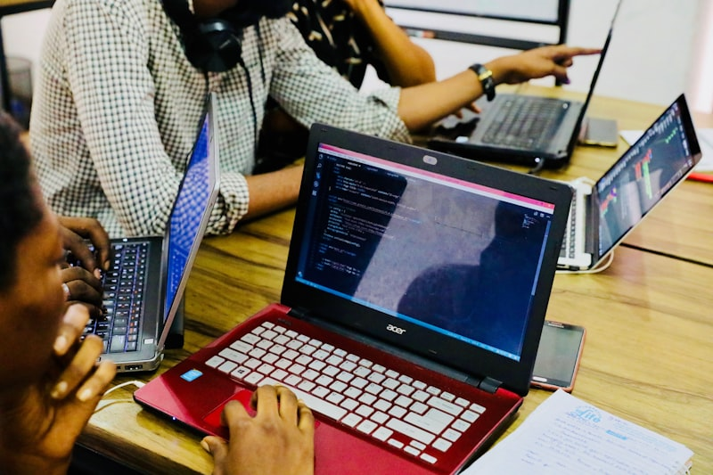

Bewoners haken af
Complexe stukken maken participatie vooral toegankelijk voor mensen die de taal, tijd en procedure al kennen.

Hackathon 2026 · YIMBY · Samenspraak
Een AI-tool die bewoners in begrijpelijke taal laat meepraten en zienswijzen omzet in een bruikbaar participatieverslag. Sneller draagvlak, minder ruis, meer woningen.
Het probleem
Bewoners ontvangen plannen vol juridisch taalgebruik. Gemeenten krijgen losse zorgen, dubbele zienswijzen en veel handwerk. Ontwikkelaars verliezen maanden terwijl het echte gesprek te laat en te onduidelijk plaatsvindt.
Complexe stukken maken participatie vooral toegankelijk voor mensen die de taal, tijd en procedure al kennen.
Inspraak komt binnen als losse opmerkingen, pdf's en bezwaren. Clusteren en beantwoorden kost veel capaciteit.
Niet omdat niemand kan bouwen, maar omdat het proces onvoldoende vroeg, helder en gestructureerd is.

Case study
Schapenweide in Muiden laat zien waar het misgaat: niet bij de schop in de grond, maar in de jaren ervoor. Zienswijzen, natuur, stikstof en beroepstrajecten stapelen zich op totdat ieder besluit zwaar wordt.
Onze oplossing
Samenspraak maakt participatie laagdrempelig voor bewoners en bruikbaar voor de mensen die het besluit moeten voorbereiden.

Een bewoner vult een postcode in en krijgt het bouwplan uitgelegd op B1-niveau, in de taal die past.

Verkeer, groen, geluid en bouwhoogte worden direct gestructureerd, zonder de menselijke toon kwijt te raken.

AI clustert input, maakt conceptreacties en levert een participatieverslag op dat een ambtenaar kan controleren.
Demo
Hier komt de hackathon-demo. Plak straks alleen de YouTube-, Vimeo- of Loom-url in assets/script.js.

Demo video nog niet gekoppeld
Vervang de placeholder met jullie video-url zodra die online staat.
“Participatie hoeft niet te vertragen. Als je het gesprek vroeg en helder organiseert, kan het juist versnellen.”
Het team
Vanuit vastgoed, recht en technologie bouwen we aan participatie die bewoners serieus neemt en besluitvorming werkbaar maakt.
Co-founder · Strategy
Strategieconsultant met achtergrond in vastgoedrecht. Ziet hoe trage processen bouwprojecten en woningzoekenden raken.
ContactCo-founder · Product & Technology
Bouwt de technologie achter Samenspraak en vertaalt AI naar concrete workflows voor echte gebruikers.
Contact
Samenspraak
Een hackathonprototype voor een woningmarkt die geen tijd heeft om goede plannen te laten vastlopen in onduidelijkheid.
Terug naar demo